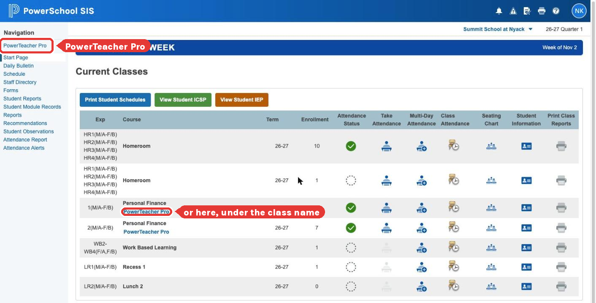
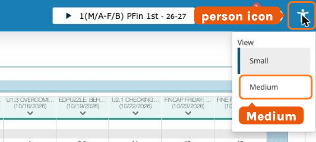
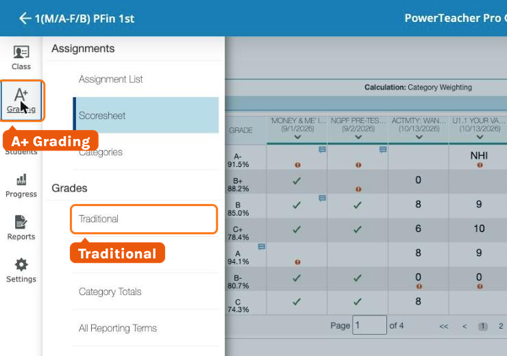
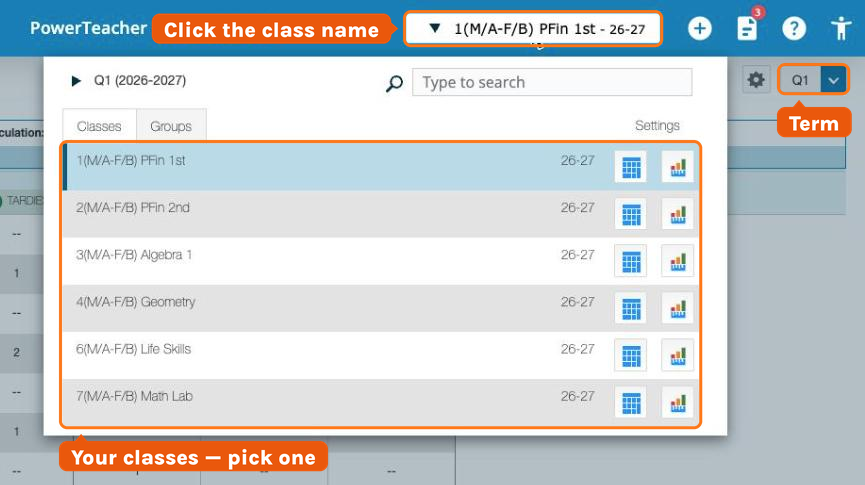
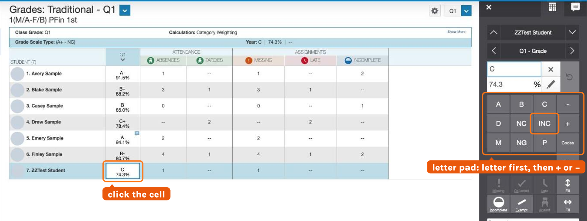
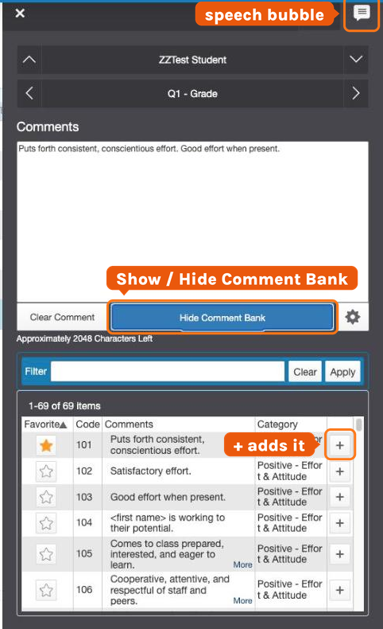
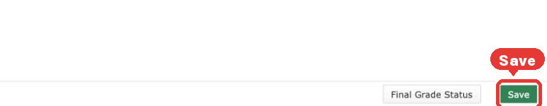
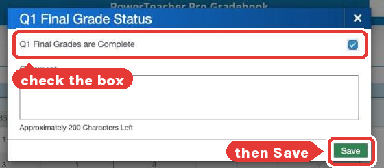
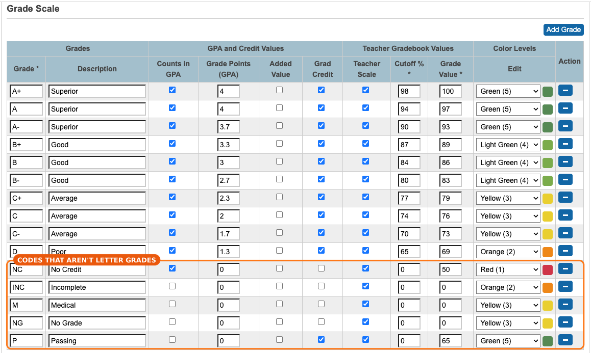

Every class gets a letter grade in PowerSchool each quarter
At the end of each quarter, every teacher types a letter grade for every student, in every class — even if you keep your gradebook somewhere else. That letter is what prints on the report card. PowerSchool calls these final grades — final for the quarter, not the year.
PowerTeacher Pro → A+ Grading → Grades → Traditional. Not the attendance page.
Your grades for every student in every class, and the two comments you want for each student.
About 3 minutes a class once you get going. A full schedule is 20–30 minutes.
Sign in and open PowerTeacher Pro
Signing in lands you on the Start Page — your classes and the attendance icons. That is not the gradebook; it's one more click.
- 1Go to summitnyack.powerschool.com/teachers and sign in.
- 2In the Navigation menu on the left, click PowerTeacher Pro (it's the first item). The gradebook opens.
- 3Shortcut: the blue PowerTeacher Pro link under a class name opens the gradebook already on that class.

Make the text bigger
PowerTeacher Pro starts small. If your screen doesn't look like the pictures on this page, this is why.
- 1In the blue bar at the top of PowerTeacher Pro, click the person icon at the far right.
- 2Under View, pick Medium or Large.
- 3Everything on the page grows. The pictures on this page were taken at Medium.

A+ Grading → Grades → Traditional
Quarter grades live on the Traditional page. It's two clicks in the left menu.
- 1In the left menu, click A+ Grading.
- 2Under Grades, click Traditional.
- 3The page is called Grades: Traditional - Q1: one row per student, and a Q1 column right next to the names. That column is the one you fill.

Pick the class and check the term
Two things to check before you type anything: which class and which term. Both are at the top right.
- 1The class: click the class name in the blue bar at the top (right side) to open your class list, and pick the class you're grading.
- 2The term: the small box at the top right of the page should say Q1. If it says anything else, click it and pick Q1.
- 3Look down the list — everyone in the class should be there. Someone missing or extra? Reach out before you grade (contact info at the bottom of this page).

Enter the grade
Click the student's cell and a panel called the Score Inspector slides out on the right, with a letter pad.
- 1Click the student's cell in the Q1 column. The Score Inspector opens on the right.
- 2Click the letter on the pad: A B C D. For a plus or minus, click the letter first, then + or − (B, then +, gives B+).
- 3Work still coming in? Click INC. You change it to the real grade yourself later — see Change a grade.
- 4Click the down arrow on the inspector to drop to the next student, and keep going down the class.

Add two comments from the comment bank
Summit uses two comments per class, picked from the bank — no need to write your own.
- 1With the student's Q1 cell still selected, click the speech bubble at the top right of the Score Inspector. A Comments box opens.
- 2Click Show Comment Bank. The bank lists every comment with its code. Type a word in Filter and click Apply to narrow it down.
- 3Click the + at the right end of a comment to add it. Click + on a second one. Two comments — that's the rule.
- 4Down arrow to the next student. Grade, two comments, down arrow — all the way down the class.

Save
Nothing you picked is kept until you click Save. Save before you switch classes.
- 1Click Save at the bottom right of the page.
- 2The changed cells stop being highlighted. That's your sign it took.
- 3You don't have to save after every student — once at the end of the class is fine. Just don't switch classes first.

Final Grade Status, then the next class
The green check is how the office knows you're finished with a class. It doesn't lock anything — you can still fix a grade later.
- 1Still on the Traditional page, click Final Grade Status at the bottom of the page.
- 2A box called Q1 Final Grade Status opens. Check Q1 Final Grades are Complete. The Comment is optional. Click Save in the box.
- 3The button now shows a green check. This class is done.
- 4Next class: click the class name (top left), pick the next class, and do steps 4–8 again. You're finished when every class has the green check.

Fixing a grade, and what to do with an INC
You can change your own grades right up until the quarter is locked. After that, it goes through the office.
SAVED
SAVED
(INCOMPLETE)
LOCKED
If something doesn't look right
1I'm on the attendance page and don't see any grades.
2My class isn't in the class list.
3The term box doesn't say Q1.
4I clicked a letter but it didn't stick.
5The Q1 column already has grades in it.
6A student never came / was out all quarter.
7Do I really have to do Final Grade Status?
8Can students or families see this?
Grade codes that aren't letter grades
They're on the letter pad in the Score Inspector, same as A+ to D. Here's what each one means and whether it counts in GPA.
| CODE | MEANS | WHEN TO USE IT | GPA |
|---|---|---|---|
| NG | No Grade | The student couldn’t earn credit, through no fault of their own. Always add the comment that says why:
| NOT COUNTED |
| INC | Incomplete | Work is still owed. Change it to the real grade once the work is in (Change a grade). | NOT COUNTED |
| M | Medical | The student was out for medical reasons and couldn’t be graded. | NOT COUNTED |
| NC | No Credit | The failing grade — below 65%, or the student didn’t earn credit (for example 30+ absences in a term). | COUNTS · 0 PTS |
| P | Passing | Passed and earned credit, with no letter grade. | NOT COUNTED |
